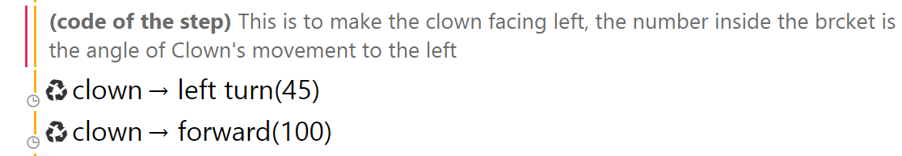
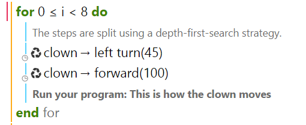
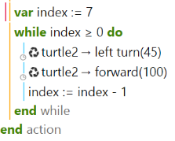

Loops (For and While)
Moving Object
To get you started, we're going to begin with how to make an object moves. Let say in this case we want to make a clown moves.
Now try this one on your own! The clown will now moves in 45 degree to the left with the length of 100 moves. We are now wondering, if we want to make multiple moves, we need to write a lot of code to place the clown to move from one place to another, individually. But lucky for us, we have a shortcut called Loops
There are different kind of loops, such as for and while. Let's start off with for loop.
For Loop
Interactive Lesson for 'For Loop': Click Here
For statement can be used to execute a line of code into a desired number of times. For example, rather than commanding the clown to moves 3 times to make an octagon, we can just use for loop and perform it 8 times:
In this example, 'i' is acting as a random variable just to store how many time we want to perform the code. Now try it by yourself in your tablets!
While Loop
Interactive Lesson for 'While Loop': Click Here
We can implement the exact same thing as for loop by using a while loop. The only difference is while loop is using a stored variable on top of the actual loop. We'll start introducing the variable, then perform the while loop
Whoops, but wait, we want an 8-sided trail, why is it only 7? Well, take a look at the symbol there. We start counting from 0 instead of 1. Now try it by yourself and try out countless shapes that you can think of!